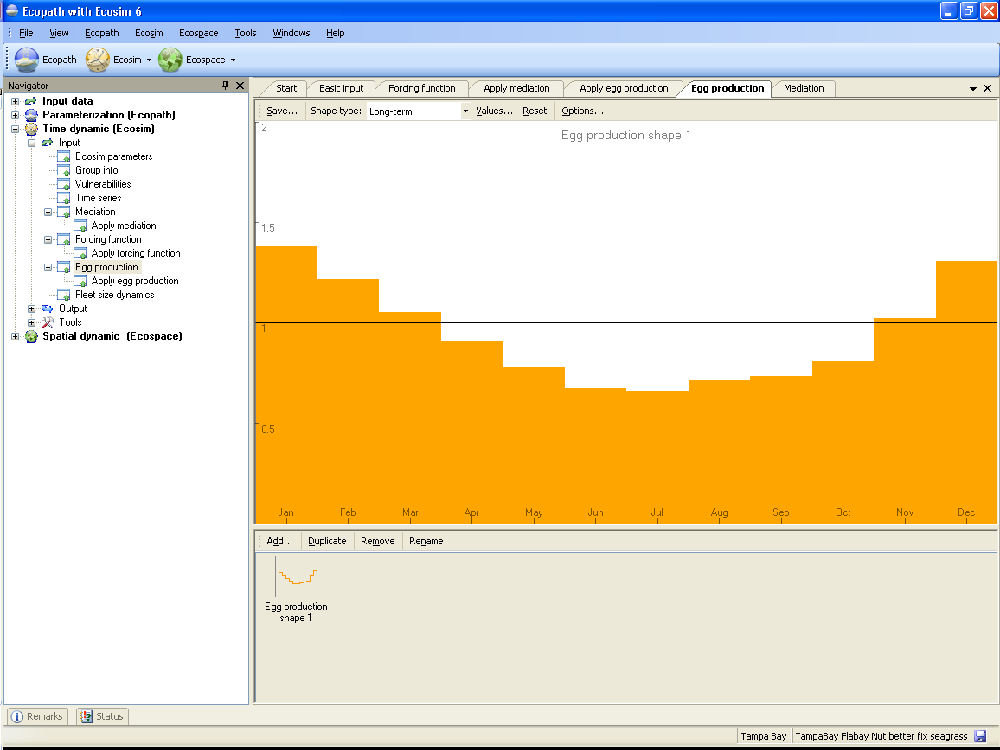
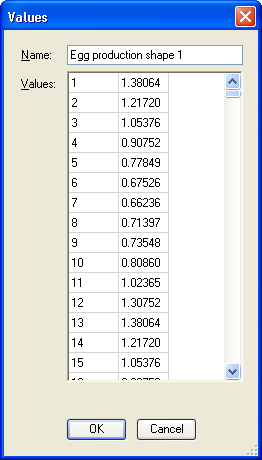

Ecosim allows linking a seasonally and long-term oscillating forcing function with the function through which the adults of multi-stanza groups are made to generate eggs/larvae, i.e., the earliest form of the youngest stanza (see Representation of multi-stanza life histories in Ecopath, Ecosim and Ecospace). Here, it is assumed that a seasonally variable factor (or a set of factors) causes the number of egg/larvae that would be produced, given the adult biomass, to vary as a function of the month. Alternatively, this factor can be interpreted as seasonally modulating the mortality of the eggs/larvae, independently of their density.
This linkage thus allows simulating the effect of abiotic variables, such as, e.g., the effect of wind-induced offshore transport of Peruvian anchoveta, a process which removes eggs/larvae from the (coast-bound) population independently of the density of their food organisms, or of their predators (Mendelssohn, 1989).
Moreover, by shifting the peak(s) of such forcing function relative to the peak(s) of a forcing function for seasonal production of phyto- and/or zooplankton, the match/mismatch hypothesis of Cushing (1975), and related hypotheses, can be tested in an ecosystem context: something previously not achievable.
To link a multi-stanza group with a seasonally oscillating or long-term forcing function, go to the Egg production form (Time dynamic (Ecosim) > Input > Egg production). Note you must have an Ecosim scenario loaded before you can open the Egg production form. You must also have multi-stanza groups defined in your Ecopath model to be able to use this form.
Important note: after you have defined the egg production shape(s) as described below you must continue to the Apply egg production form to define the multi-stanza group(s) affected by the egg production function(s). This step is essential as your egg production functions cannot be applied without it.
When you open the Egg production form for the first time, there will be no egg production shapes.
To define an egg production shape, click Add.... Use the Shape type menu at the top of the form to set whether the function is long-term (occurs over a number of years) or seasonal (repeating over a 12 month period). The X-axis of the yellow sketch pad will change accordingly.
You can then define egg production shapes in one of three ways:
1. Shapes can be drawn freehand using the yellow sketch pad. If you have selected a Seasonal shape, the X-axis will appear as the months January to December and your sketch will be drawn in monthly blocks (Figure 8.20a). If you have selected a long-term shape, the X-axis will be shown as the annual time steps of the model. The sketch will be smooth (Figure 8.20b). You will see your sketched shape transferred to the selected shape in the bottom pane;
2. Alternatively, you can use standard mathematical shapes. Click Options… at the top of the Egg production form to open the Options dialogue box. Select Shape from the menu on the left of the dialogue box (Figure 8.21a) to see a list of standard shapes (e.g., linear, sigmoid, exponential, ...). You can tailor the shape to your specific requirements by setting the Y Zero, Y End, Y Base and Steepness parameters (as applicable) in the cells provided. Select Options from the menu on the left of the dialogue box for display settings (Figure 8.21b).
3. You can also type in values directly by clicking on Values… at the top of the Egg production form. This will open a dialogue box where you can type in the Y values of the egg production shape into the cells in the left-hand column of the form. Indices of the X values (months) are already given in the right-hand column of the form (Figure 8.22).
Note that if you have defined the egg production shape using methods 1 or 2 the Values dialogue box will act as an output and display these values.
Clicking the Reset button at the top of the Egg production form resets the current egg production shape to the default constant value of 1.0.
Clicking the Save… button at the top of the Egg production form opens a dialogue box prompting you to save the current shape to a bitmap file (.bmp). Use this form to name the file and browse for a location to save it.
Sets whether the selected shape is a seasonal or long-term forcing shape.
There are four additional menu items on the bottom pane of the Egg production form that allow you add, copy, rename and delete egg production shapes.
Adds an extra blank shape.
Copies the currently-selected shape.
Removes the currently-selected shape.
Rename the currently-selected shape by selecting Rename. You will then be able to type in a new name for the shape.

Fig 8.20a (8.20b will be long-term)


Figure 8.21a & 8.21b

Figure 8.22